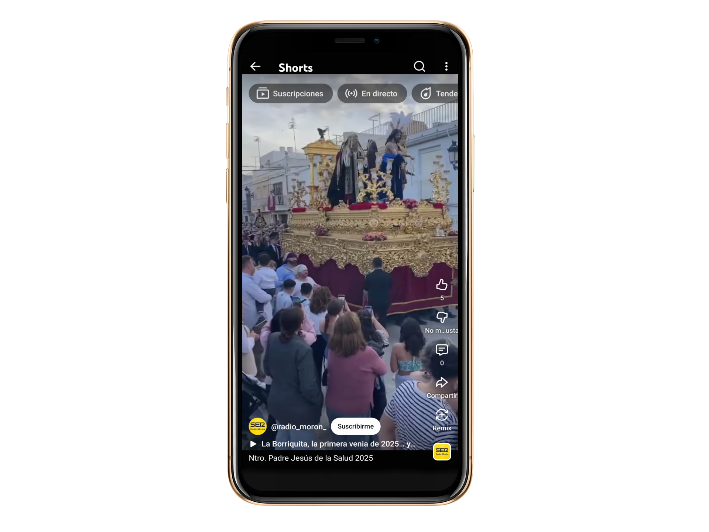
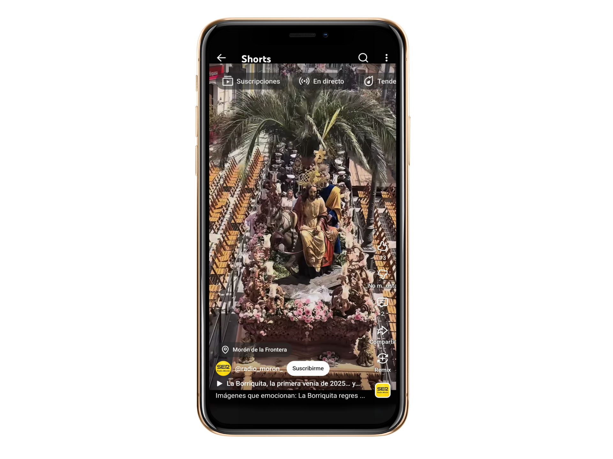
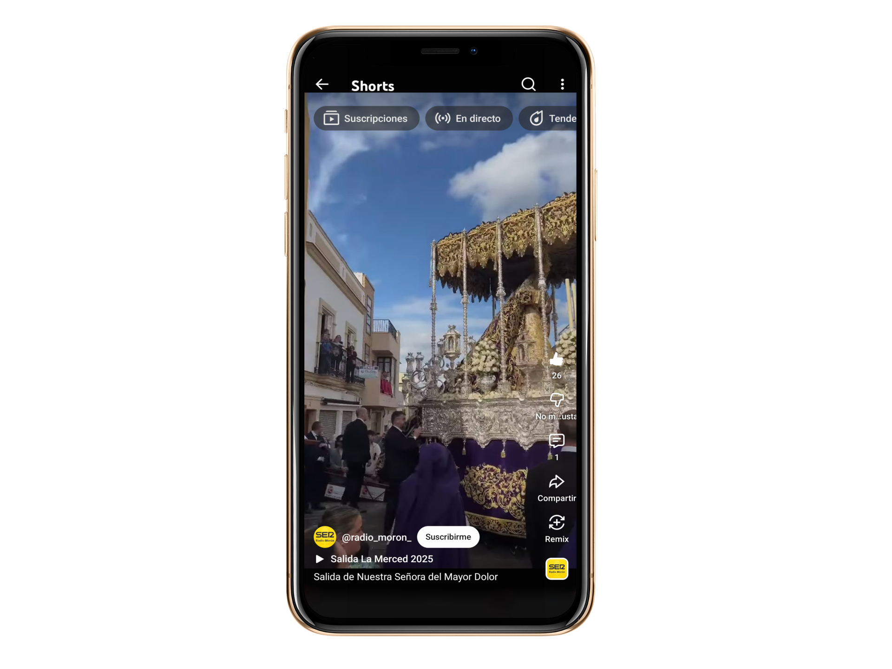
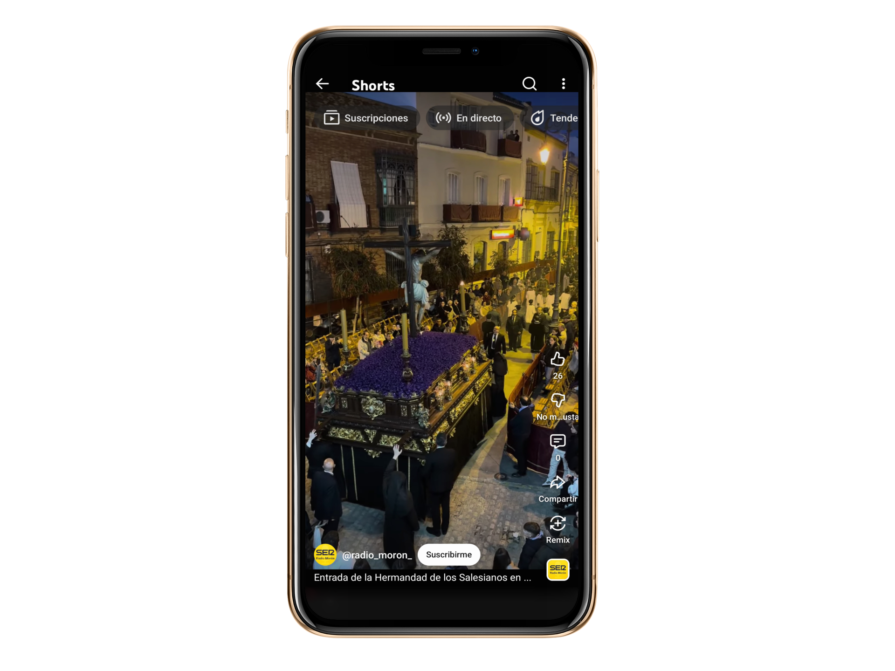
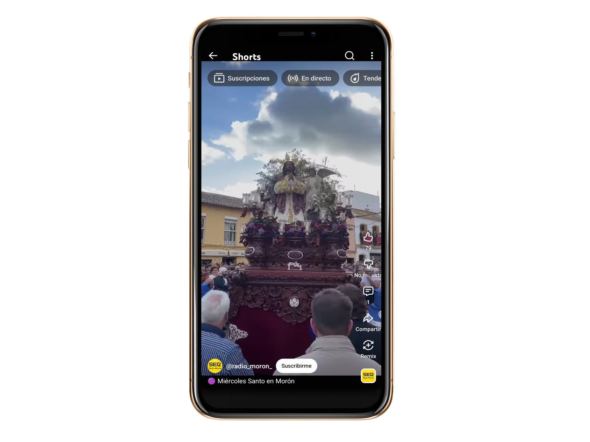
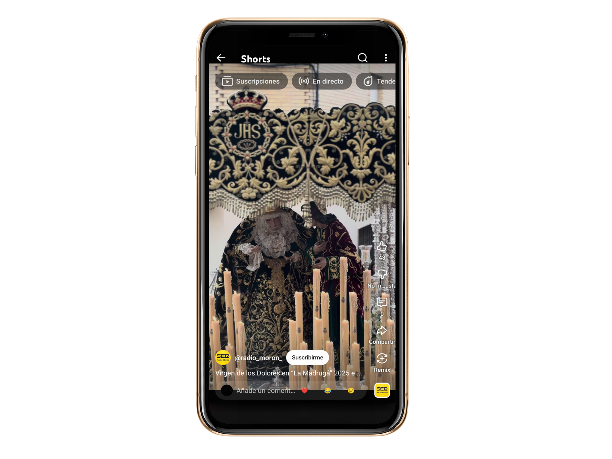
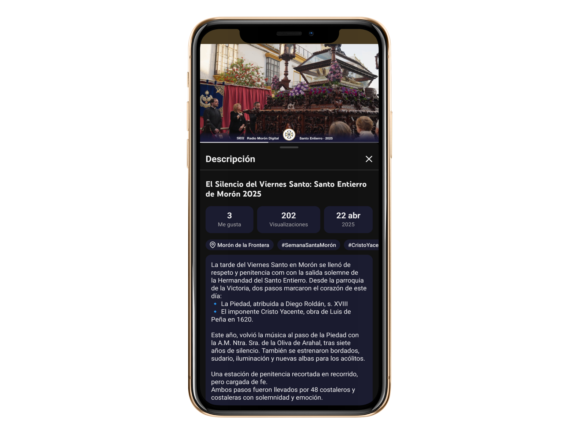
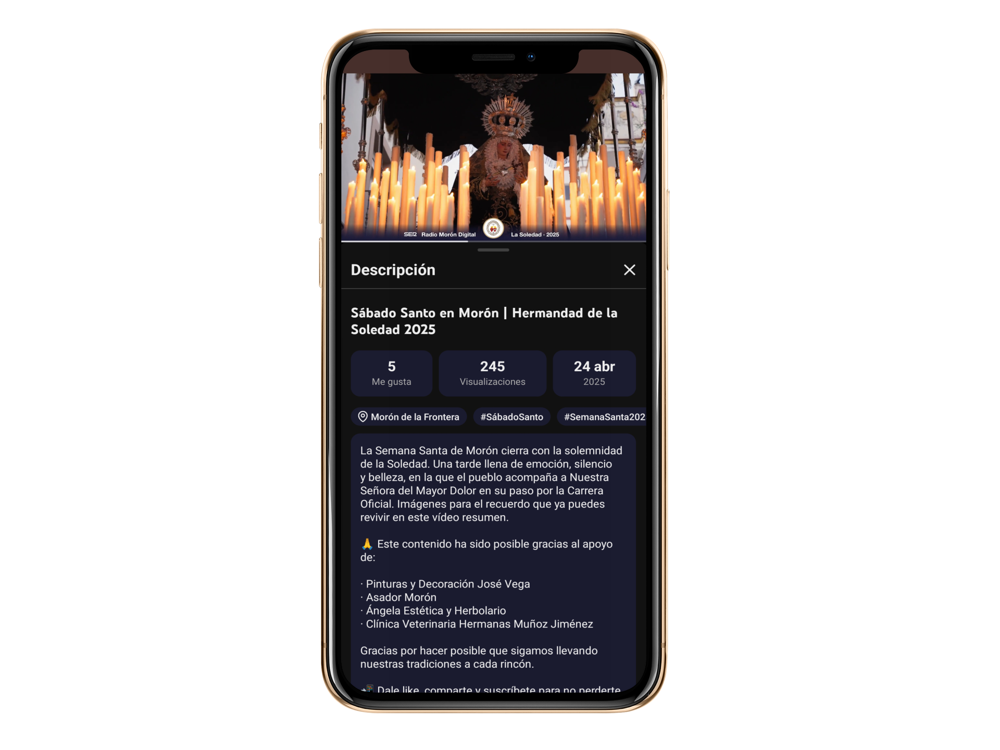

No te pierdas El Respiradero, el videopodcast cofrade de referencia en Morón. Noticias, entrevistas y todo lo que pasa en la calle… en directo y a la carta, presentado por Chema Pérez.
Tradición, calle y sentimiento en el corazón de la Campiña
La Semana Santa de Morón de la Frontera es mucho más que una cita en el calendario. Es una forma de vivir, de entender la calle y de compartir una tradición que pasa de generación en generación.
Durante estos días, el municipio se transforma. Desde el Viernes de Dolores hasta el Sábado Santo, las hermandades recorren barrios y centro, marcando el pulso de una semana que mezcla fe, historia y vida cotidiana.
Morón cuenta con una Semana Santa reconocida como Fiesta de Interés Turístico Nacional de Andalucía, un distintivo que refleja el valor de sus cofradías, su patrimonio y la implicación de todo un pueblo. Cada jornada tiene su personalidad. Desde la luz y el ambiente familiar del Domingo de Ramos, hasta la intensidad de la Madrugá o el cierre del Sábado Santo, la Semana Santa se construye paso a paso, calle a calle.
En 2026, además, la semana llega con novedades, cambios de recorrido, estrenos y situaciones especiales que harán de esta edición una de las más singulares de los últimos años.
Porque la Semana Santa de Morón no solo se ve…se vive.
Viernes de Dolores
Jesús de la Salud y el Perdón, María Stma. de los Ángeles y de la Cruz, y Ntra. Sra. del Rosario y el Bendito Patriarca San José

Mapa de recorrido
Viernes de Dolores
El Soberano abre la Semana Santa desde el barrio del Pantano.
La Semana Santa de Morón de la Frontera arranca el Viernes de Dolores con la salida de la Hermandad del Soberano desde la parroquia de San José. El cortejo procesional comenzará a las 18:30 horas y recorrerá distintas calles del barrio del Pantano hasta su recogida a las 00:30 horas.
Se trata de una hermandad joven, creada en 2009 como grupo de fieles y reconocida oficialmente en 2022. Sus titulares, obra del imaginero Manuel Martín Nieto, han ido completando el misterio en los últimos años.
Como novedad en 2026, la hermandad cambia el sentido de su recorrido en el Parque Antonio Romero y presenta varios estrenos, entre ellos nuevos elementos para el paso de palio.
Hdad y Cofradía de Nazarenos del Stmo. Cristo de la Bondad en su Entrada Triunfal en Jerusalén, María Auxiliadora, San Juan Bosco y Santo Domingo Sabio

Mapa de recorrido
Domingo de Ramos:
La Borriquita abre la Semana Santa con color, palmas y familias.
El Domingo de Ramos comienza en Morón de la Frontera con la Hermandad de la Borriquita, que realizará su salida a las 10:20 horas desde María Auxiliadora. La conocida como hermandad de los niños llenará las calles de palmas y ambiente festivo en un recorrido que incluye su paso por carrera oficial a las 11:05 horas. La recogida está prevista sobre las 15:05 horas.
Este año, el nazareno encargado de solicitar la primera venia de la Semana Santa será Mateo Reina Ramírez, un momento simbólico que marca el inicio oficial de los desfiles procesionales.
Fundada en 1964, la cofradía cuenta con el Cristo de la Bondad como titular y mantiene una fuerte tradición entre las familias de la localidad.
Hermandad del Stmo. Cristo del Calvario y Ntra. Sra. del Mayor Dolor

Mapa de recorrido
Lunes Santo (Tarde):
La Merced llena de emoción las calles de Morón.
El Lunes Santo es el turno de la Hermandad de la Merced, que realizará su salida a las 18:00 horas desde su parroquia.
La cofradía recorrerá distintas calles del centro de Morón hasta su paso por carrera oficial a las 21:00 horas, con recogida prevista a las 00:30 horas.
El Cristo del Calvario, acompañado por el conjunto del misterio y la Virgen del Mayor Dolor, protagonizan una jornada marcada por el silencio, la emoción y el acompañamiento del público en cada tramo del recorrido.
Este año, además, la hermandad inicia una nueva etapa con el estreno de su hermano mayor, José Antonio Pernía.
Fundada en el siglo pasado y recuperada en 1989, la hermandad mantiene una presencia muy consolidada dentro de la Semana Santa moronense.
Fervorosa Hermandad del Stmo. Cristo de la Buena Muerte, María Santísima de la Amargura y San Juan Bosco

Mapa de recorrido
Martes Santo (Tarde):
Los Salesianos llenan de solemnidad el Martes Santo en Morón.
El Martes Santo, la Hermandad de los Salesianos realizará su salida a las 19:10 horas desde María Auxiliadora.
El paso por carrera oficial está previsto a las 20:00 horas y la recogida a las 23:30 horas.
El Cristo de la Buena Muerte y la Virgen de la Amargura recorren las calles de Morón en una jornada donde la solemnidad marca el ambiente, con un estilo muy característico que envuelve todo el recorrido.
Esa atmósfera se refuerza un año más con la elección de la agrupación vocal de cámara "Redentoris Mundi" que acompaña al Cristo y aporta un sonido más íntimo y muy reconocible.
Una tarde noche muy seguida por la comunidad salesiana, con público acompañando durante todo el recorrido y con momentos que cada año quedan en la memoria de los vecinos.
Hermandad Sancramental y Cofradía de Nazarenos del Stmo. Cristo de la Agonía en el Huerto, María Stma. de Loreno y Ntra. Sra. de los Remedios

Mapa de recorrido
Miércoles Santo (Tarde):
San Francisco vivirá un año histórico con salida desde San Miguel.
El Miércoles Santo de 2026 será especial en Morón. La Hermandad de San Francisco saldrá desde la iglesia de San Miguel a las 18:00 horas, debido a las obras en su templo habitual.
El paso por carrera oficial será a las 23:20 horas, con recogida a las 00:50 horas.
El Cristo de la Agonía y la Virgen de Loreto protagonizan una jornada que quedará para el recuerdo por este cambio excepcional.
Real y Antigua Hermandad de Gloria de la Santa Cruz y Cofradía de Nazarenos del Stmo. Cristo de la Expiración, Ntra. Sra. de la Esperanza y San Ignacio de Loyola
Patrocinador destacado
Mapa de recorrido
Jueves Santo (Tarde):
La Compañía protagoniza una de las noches grandes de Morón.
El Jueves Santo, la Hermandad de la Compañía realizará su salida a las 18:30 horas desde San Ignacio de Loyola.
Su paso por carrera oficial será a las 22:25 horas y la recogida a las 23:45 horas.
Se trata de una de las hermandades más antiguas, con origen en 1624, que mantiene una gran presencia en las calles durante toda la jornada.
Este año, además, la hermandad presenta como uno de sus grandes hitos la finalización de la talla del paso del Cristo, una actuación muy esperada que completa el conjunto y marca un paso importante en su patrimonio.
Real, muy Antigua, Ilustre y Fervorosa Hermandad de Ntro. Padre Jesús Nazareno, María Stma. de los Dolores y San Juan Evangelista

Mapa de recorrido
Viernes Santo (Madrugada):
Nuestro Padre Jesús recorre Morón en la noche más intensa.
La Madrugá del Viernes Santo comenzará a las 05:30 horas con la salida de Nuestro Padre Jesús desde la ermita de la Fuensanta. El paso por carrera oficial está previsto a las 08:40 horas y la recogida a las 12:45 horas.
Es una de las procesiones más emblemáticas de Morón, con orígenes que se remontan al año 1602.
En su recorrido estará acompañado por las dos bandas de Morón, la Agrupación Musical Nuestro Padre Jesús de la Fuensanta y la Banda Municipal de Música, reforzando el carácter local de una de las citas más esperadas de la Semana Santa.
Hermandad del Stmo. Cristo Yacente, Ntra. Sra. de las Angustias y Stmo. Cristo de la Victoria

Mapa de recorrido
Viernes Santo (Tarde):
El Santo Entierro marca el momento más solemne de la Semana Santa.
El Viernes Santo por la tarde, la Hermandad del Santo Entierro saldrá a las 19:00 horas desde la iglesia de la Victoria.
El paso por carrera oficial será a las 19:30 horas y la recogida a las 22:15 horas.
La procesión destaca por su carácter sobrio y por la presencia de la Virgen de las Angustias, representada en una escena de la Piedad, junto al Cristo Yacente, que cierra el cortejo. Este año, además, la hermandad ha tenido que afrontar dificultades para completar la cuadrilla de la Virgen, siendo necesarios 24 costaleros o costaleras para su salida, un esfuerzo añadido que pone en valor el trabajo interno de la cofradía.
Una jornada marcada por el silencio, el respeto y una de las estampas más representativas de la Semana Santa de Morón.
Ilustre y Fervorosa Hdad de Esclavitud de los Sagrados Corazones de Jesús y de María y Cofradía de Nazarenos de Ntra. Sra. de los Dolores en su Soledad

Mapa de recorrido
Sábado Santo (Tarde):
La Soledad pone el broche final a la Semana Santa de Morón.
La Semana Santa de Morón se cierra el Sábado Santo con la Hermandad de la Soledad, que saldrá a las 18:30 horas desde San Miguel.
El paso por carrera oficial será a las 20:45 horas y la recogida a las 22:10 horas.
La procesión finaliza una semana intensa con una imagen marcada por el silencio y la emoción, poniendo el broche a los días grandes de la ciudad.
Antes de El Respiradero, así vivimos la Semana Santa en Radio Morón
Disfruta de los programas completos de Canela y Clavo, el espacio cofrade que nos acompañó en 2023, 2024 y 2025 con Pepe Siles al frente.
Un archivo imprescindible para recordar momentos, tertulias y protagonistas de nuestra Semana Santa.